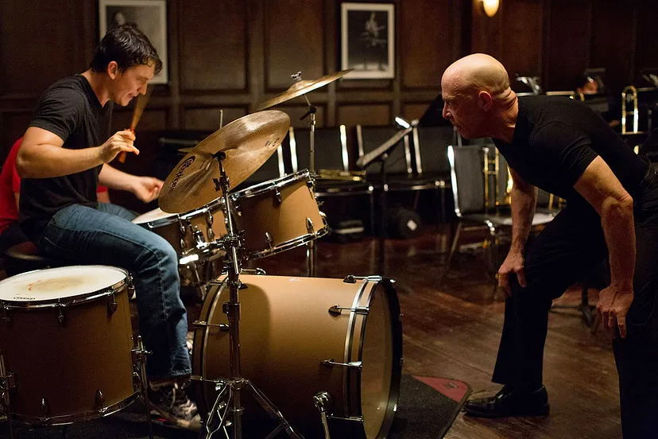

12th of December, 2024
Why Whiplash is my perfect movie.
Every once in a while, a movie comes along that feels like it was made just for you. For me, that movie is Whiplash. It isn’t just a story about a drummer or a demanding teacher; it’s a cinematic lesson about ambition, perseverance, and the relentless pursuit of greatness. I’ve taken Whiplash to be the defining movie of my teenage years—not because of its gripping performances or stunning direction, but for the principle it taught me: to be relentless about my ambitions.
Watching Andrew Neiman push himself to become the best drummer of his generation was both inspiring and sobering. The film doesn’t sugarcoat the journey to success. It isn’t about luck or talent alone—it’s about practice, grit, and the willingness to endure pain. The scene where Andrew’s hands bleed as he plays the drums or the moment he gets back on stage after a brutal car accident left a lasting impression on me. It made me ask myself: Do I want my dreams badly enough to work through discomfort, criticism, and setbacks?
As a teenager navigating my own goals, this question hit close to home. It’s easy to want something in theory, but Whiplash made me realize that wanting isn’t enough. You have to chase your ambitions with everything you’ve got, even when the odds are stacked against you. Andrew’s story reminded me that the road to greatness isn’t pretty—it’s messy, exhausting, and sometimes isolating. But those who are willing to endure it are the ones who rise above mediocrity.
What struck me the most was Terence Fletcher’s philosophy. His methods were brutal, and his relentless pursuit of perfection often crossed the line. But the core of his belief—that pushing someone beyond their perceived limits is the only way to uncover their potential—resonated with me. While I don’t condone his toxic approach, I couldn’t help but reflect on how complacency often holds people back. Being told “good job” might feel nice, but it rarely pushes us to improve. Fletcher’s extreme mentorship made me think about how growth often requires discomfort and how true success demands stepping out of my comfort zone.
One of the most powerful moments in the movie is Andrew’s final drum solo. That scene isn’t just a performance; it’s a culmination of everything he’s sacrificed—his relationships, his health, even his sanity. It’s a moment of triumph, not because he pleases Fletcher but because he proves something to himself. Watching it, I felt a surge of motivation to create my own moment like that. I may not be a drummer, but I have my own passions, my own stage to dominate, and my own version of that solo to deliver.
Whiplash doesn’t romanticize ambition. It shows the cost—the sacrifices, the risks, and the pain. But it also shows the rewards of persistence and dedication. For me, this movie isn’t just entertainment; it’s a reminder that greatness demands more than just dreaming. It demands everything.
As I move through life, I carry this lesson with me: if I want something deeply enough, I have to chase it relentlessly, no matter how tough the journey gets. Like Andrew, I want to walk off my stage someday knowing I gave it my all. That’s what Whiplash taught me, and that’s why it will always be the perfect movie of my teenage years.